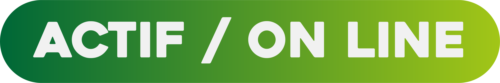
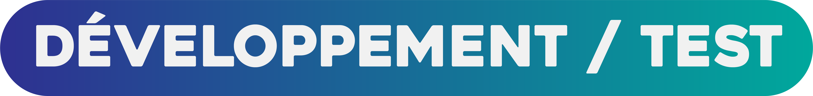
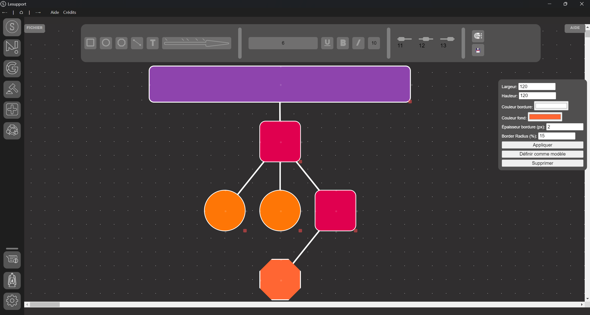
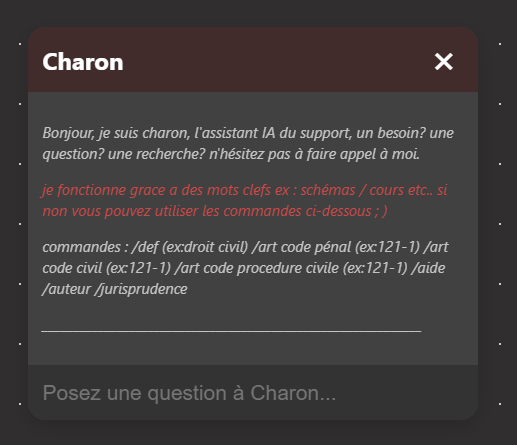

le support se développe !!!
Enfin ca bouge un peu ...
Je suis fier de vous annoncer que le support se détache du format web pour se tourner vers une version locale plus puissante, plus pratique afin d'offrir des services d’une bien meilleure qualité.
cette nouvelle version offre dors et déjà une panoplie d’outils pour rendre votre apprentissage bien plus facile et pratique. :

set window
le support est une interface de travail totalement modulable, tout commence par une version du support, simple epurée, facile a prendre en main, a partir de là libre a vous d'ajouter un des nombreux modules presenté si contre pour perfectionner votre experience.
Dédale - générateur de schémas
Etat et versionnage :
version 1.0 :

version 1.1 :


Qu'est-ce que Dédale ?
Dédale est un générateur de schémas qui vous permet de créer des représentations visuelles de concepts juridiques. Il est conçu pour faciliter la compréhension et l'apprentissage en transformant des informations complexes en schémas clairs et concis.
Charon - bot chat / assistant d'étude
Etat et versionnage :
version 1.3 :
version 1.4 :

Ca c'est Charon, tout ce qui vous sépare de dures minutes de labeur à trouver vos sources.
basiquement c’est quoi ?
charon est un tchat lié à diverses bases de données permettant à l'image d’un chat GPT spécialiste de répondre clairement à vos demandes et interrogations.
Dans un souci de compatibilité avec les ressources du site, le moteur de recherche de charon est aujourd’hui uniquement basé sur des commandes, que vous retrouverez dans sa biographie ou à l'aide de la commande “/”.
compétences actuelles
affichage :
- articles des codes civil, pénal, de commerce.
- définitions.
- fiches techniques d’auteurs juridiques.
- jurisprudences (avec leurs fiches d'arrêt)
il repond egalement a des questions simples :
ex :
- bonjour comment vas-tu?
- donne moi la méthodologie d’une fiche d'arrêt.
- Comment faire un stage à Nanterre.
- + 150 interactions possibles…